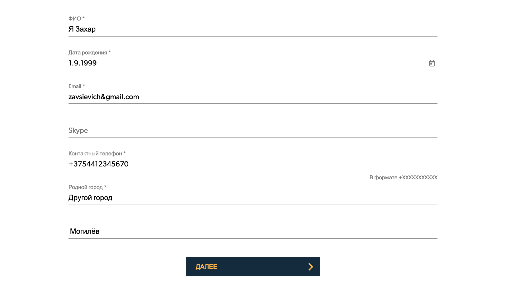

Пользователи с различными уровнями нарушения зрения, дальтонизмом или полной слепотой. Некоторым
требуется программное обеспечение, такое как программы чтения с экрана, чтобы объявить содержимое экрана
либо синтезированным голосом, либо шрифтом Брайля.
Не полагайтесь на цвет

Аудиальные
Пользователи с различными уровнями нарушения слуха. Если приложение использует звук для передачи
информации, то также должны быть предоставлены визуальные альтернативы или субтитры.
Пользователям может быть трудно использовать мышь. Вместо неё они могут использовать клавиатуру или
вспомогательные технологии для управления своим устройством.
Пользователей могут испытывать затруднения с пониманием содержания, информации, пониманием
языка, сохранением фокуса или восприятием. Веб-сайты должны быть построены таким образом, чтобы вся
информация была легко понятна и была легко доступна.
Минимальная область: область индикации фокуса больше или равна самой длинной стороне ограничительного
прямоугольника сфокусированного контрола, умноженной на 2px
Контрастность фокуса: изменение цвета в фокусе имеет контраст 3:1 с цветом до состояния фокуса
Контрастность или толщина: показатель фокуса имеет контрастность 3:1 или его толщина минимум 2px
🇪🇺Европейский закон о доступности (European Accessibility Act — EAA)
Обязаны исполнять все государственные и коммерческие компании, которые создают информационно-коммуникационные
технологии.
2022 — Появятся документы о регулировании закона
2025 — Все приложения должны быть доступными
🇪🇺Европейский стандарт EN 301 549 (Standard EN 301 549 — EN 301 549)
Стандарт даёт только рекомендации. Он становится обязательным, когда на него ссылается документ с юридической
силой. Это может быть Директива о веб-доступности или Европейский закон о доступности.
Обязаны исполнять федеральные агентства и любые компании, которые сотрудничают с ними. Ими могут быть частные
фирмы из США и других стран ( + любые организации, получающие субсидии от государства)
Хотя этот закон был написан до появления интернета, можно утверждать, что недоступный веб-контент не
позволяет людям с ограниченными возможностями иметь равные возможности «в результате дискриминационной
практики»
🇨🇦Закон о доступности для
онтариев с ограниченными возможностями (AODA — Accessibility for Ontarians with Disabilities Act)
Является законом Онтарио. Цель AODA — создание безбарьерного Онтарио к 2025 году. Применяется ко всем
организациям и лицам, предоставляющим общественные услуги, у которых есть по крайней мере один сотрудник в
Онтарио.
2021 — Закон вступает в силу
Размер штрафов может достигать до 100.000$ США за каждый день нарушения
Доступные многофункциональные интернет-приложения, фреймворк, который можно использовать для
улучшения
веб-приложений и доступности контента, особо полезен при наличии динамических элементов.